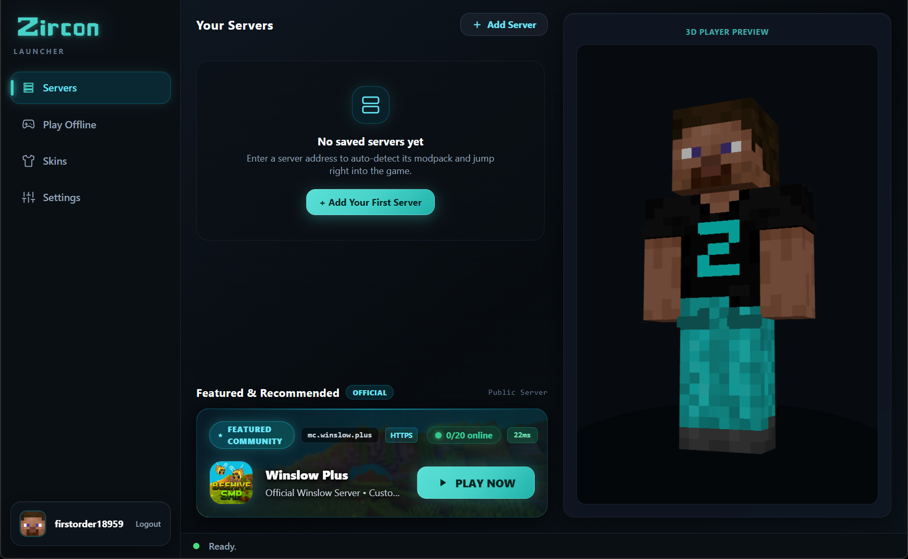
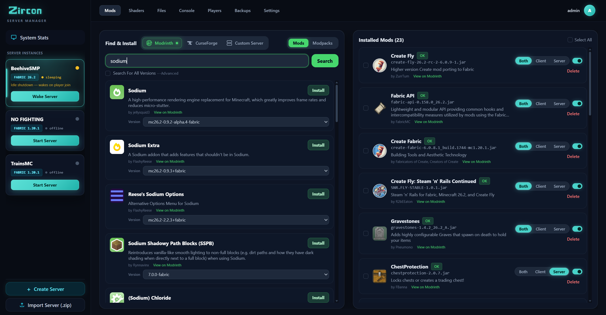
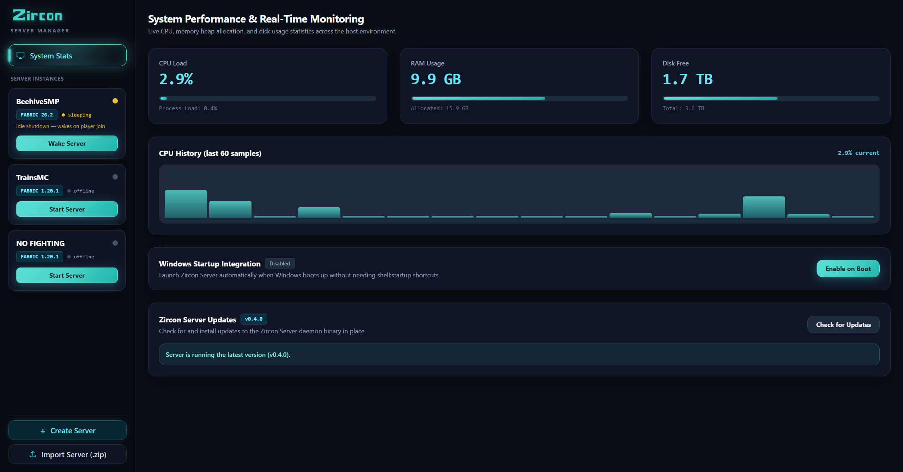
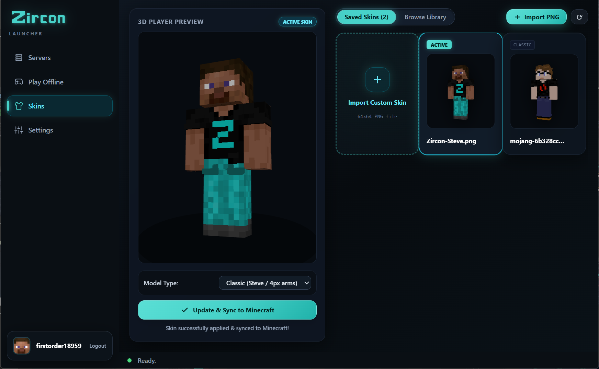
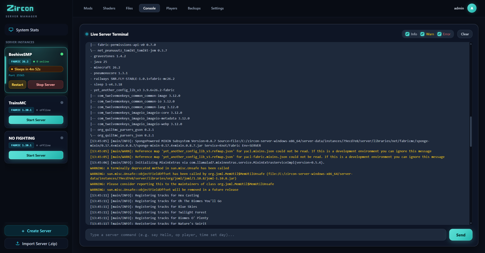
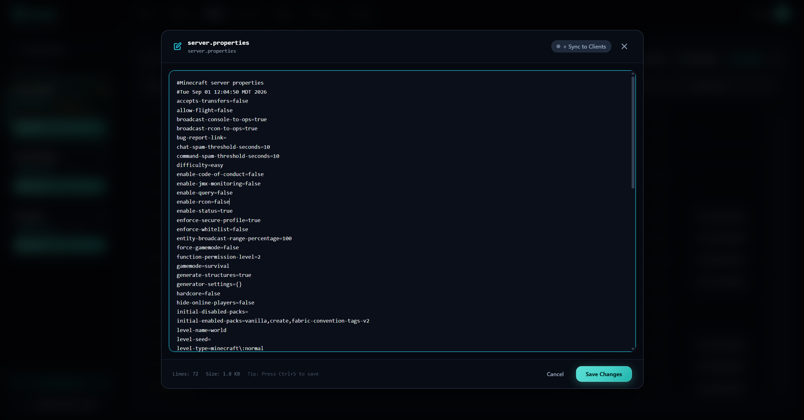
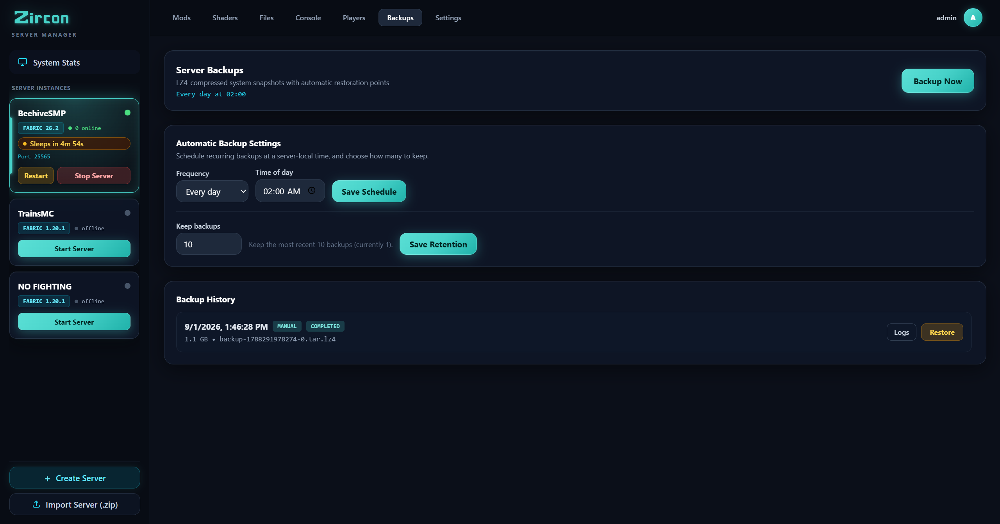
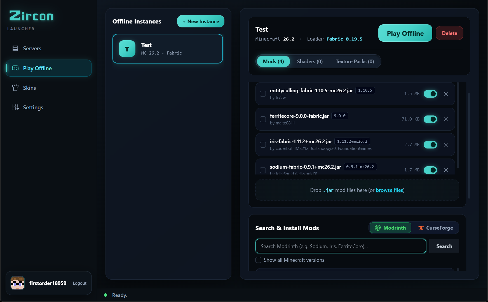

Zircon connects players and servers seamlessly. Pick a server, hit PLAY, and the exact mods that server runs install themselves — verified against Modrinth & CurseForge on every launch. No modpack hunting. No version guessing.





Click any tab above or click the image to inspect full-screen details.
No more manually downloading ZIP files, matching Forge versions, or debugging missing library crashes. Zircon detects your server's modpack, pulls verified files from Modrinth & CurseForge, and connects you seamlessly.
Manage instances, install CurseForge & Modrinth mods, monitor live CPU/RAM charts, and configure sleep/wake modes without writing shell scripts or configuring multi-port firewalls.
localhost:25564.
A unified suite for modded Minecraft — click any feature below to inspect the interface and tools.
Search, filter, and install hundreds of thousands of mods from both leading Minecraft repositories directly inside your interface with zero API key configuration needed. Automatic dependency resolution and SHA-512 cryptographic verification ensure rock-solid stability.
Monitor your server live with sub-millisecond WebSocket output. Send commands, inspect formatted Minecraft logs with color-coded info, warnings, and error stacks, and filter logs with one click.
Pick from your saved skins or upload a custom PNG, preview your character in full rotating 3D, and sync directly to Mojang. Plus, browse thousands of trending skins fetched live from the community API.
Edit server.properties, JSON configs, and game files with full syntax highlighting directly in the web browser. Push config changes to all connected client launchers in seconds with "Sync to Clients".

Protect your world with scheduled high-speed LZ4 compressed backups. Set custom retention policies, create manual restore points before major mod additions, and revert with a single click.

Launch isolated offline instances with your choice of Minecraft version, loader (Fabric/Quilt/Forge/NeoForge), custom RAM allocation, and local modpacks without needing an active internet connection.

Scrolling mod sites for "the right build" and hoping it matches what your friends are running.
Manually dropping mod files into mods/ and deleting the ones that crash on launch.
Comparing configs with your friend at 1am, one mismatch at a time, while the server sits empty.
Built for people who want to play modded Minecraft with friends — not spend their evening reconciling mod versions and crash logs.
Hit PLAY and Zircon downloads the right Minecraft version and mod loader — Fabric, Quilt, Forge, or NeoForge — installs the mods, and drops you straight into the game.
Search & download mods from Modrinth and CurseForge with verified SHA-512 and fingerprint checks on every launch. Nothing missing, nothing stale.
Official Microsoft sign-in — your password goes to Microsoft, never to Zircon. No shared logins, no cracked launchers, no offline workarounds.
Saved skin selector with live 3D preview, official Mojang cloud sync, and an in-app community skin explorer pulling trending skins via API.
Servers can offer their own shaders and resource packs. Zircon applies them when you join — you just say yes once, and it's done.
Create offline single-player instances with their own mods, shaders, and texture packs. No server required — just build in peace.
One click, in your browser. Zircon uses the official Microsoft flow — your password never touches the app.
Your saved servers, most recently played first — plus recommendations. Each server brings its own mod list along.
Zircon syncs and verifies the mods from Modrinth & CurseForge, wakes the server if it's asleep, and connects you. You spawn in — fully modded, ready to go.
Zircon's server manager pairs with the launcher, so your players install exactly what you run. No setup guides. No support tickets.
Your server publishes its cryptographic mod manifest; every player's launcher installs precisely what you run with zero version mismatch.
Search and install mods directly from Modrinth and CurseForge in your dashboard with zero API key configuration needed, or drop in custom JARs.
Minecraft gameplay (25565) and HTTP REST manifests run on the exact same port — no firewall gymnastics or port juggling required.
Execute commands, review color-coded server logs in real time, and monitor CPU and memory usage from any web browser.
Servers pause gracefully when empty to conserve host resources and wake automatically the moment a player clicks PLAY.
Schedule high-speed LZ4 backups with custom retention policies and revert to any world snapshot with a single click.
Everything you need to know about getting started with Zircon.
When you join a server and hit PLAY, Zircon compares the server's published mod list against your local client folder. Any missing or updated mods are verified via Modrinth & CurseForge SHA-512 hashes and fingerprints, then downloaded instantly without manual file dragging.
Yes! Zircon natively supports searching, installing, and synchronizing mods directly from both Modrinth and CurseForge with zero API key configuration needed. Both repositories are fully integrated out of the box.
Yes, Zircon is source-available under the Business Source License 1.1 (BSL 1.1). Both the client launcher and the self-hosted server manager are completely free for players, homelabbers, and gaming networks. The entire codebase is open for public inspection, self-hosting, and community contribution on GitHub.
Yes. Authentication is performed via standard Microsoft OAuth in your default browser. Your login credentials go directly to Microsoft's login servers and are never accessed, handled, or stored by Zircon.
Zircon natively supports Fabric, Quilt, Forge, and NeoForge. The launcher automatically installs the required mod loader version when you launch an instance or join a server.
Download Zircon, sign in with your Microsoft account, and join a server. The mods will be waiting for you — verified, synced, ready.
Download Zircon Launcher View Source on GitHub